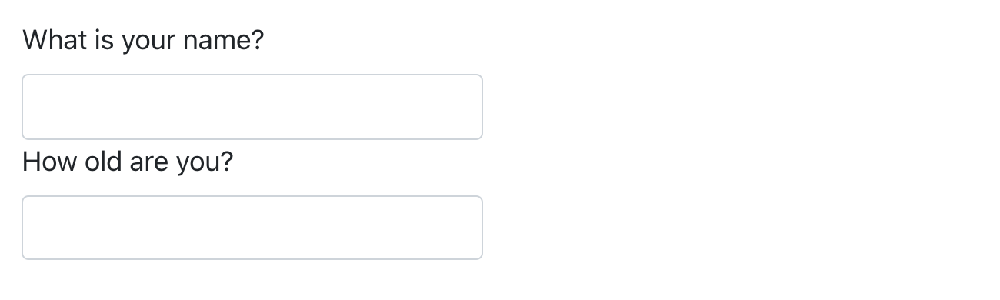

quarto::quarto_render("diamond-sizes.qmd", output_format = c("docx", "pdf"))29 Quarto 格式
29.1 引言
到目前为止，你已经了解了如何使用 Quarto 来生成 HTML 文档。 本章将简要概述你可以使用 Quarto 生成的许多其他类型的输出。
有两种方法可以设置文档的输出格式：
-
通过修改 YAML 标头来永久设置：
title: "Diamond sizes" format: html 通过手动调用
quarto::quarto_render()来临时设置：
#| eval: false quarto::quarto_render(“diamond-sizes.qmd”, output_format = “docx”) ```
```如果你想以编程方式生成多种类型的输出，这种方法非常有用，因为output_format` 参数也可以接受一个值列表。
29.2 输出选项
Quarto 提供了多种输出格式。 你可以在 https://quarto.org/docs/output-formats/all-formats.html 找到完整的列表。 许多格式共享一些输出选项（例如，用于包含目录的 toc: true），但其他格式则具有特定于格式的选项（例如，code-fold: true 会将代码块折叠成 HTML 输出的 <details> 标签，以便用户可以按需显示它，但这不适用于 PDF 或 Word 文档）。
要覆盖默认选项，你需要使用一个展开的 format 字段。 例如，如果你想渲染一个带有浮动目录的 html，你可以这样使用：
format:
html:
toc: true
toc_float: true你甚至可以通过提供一个格式列表来渲染到多种输出：
format:
html:
toc: true
toc_float: true
pdf: default
docx: default请注意，如果你不想覆盖任何默认选项，可以使用特殊语法 (pdf: default)。
要渲染到文档 YAML 中指定的所有格式，你可以使用 output_format = "all"。
quarto::quarto_render("diamond-sizes.qmd", output_format = "all")29.3 文档
上一章重点介绍了默认的 html 输出。 这个主题有几种基本的变体，可以生成不同类型的文档。 例如：
pdf：使用 LaTeX（一个开源的文档排版系统）制作 PDF，你需要安装它。 如果你还没有安装，RStudio 会提示你。docx：用于 Microsoft Word (.docx) 文档。odt：用于 OpenDocument 文本 (.odt) 文档。rtf：用于富文本格式 (.rtf) 文档。gfm：用于 GitHub 风格的 Markdown (.md) 文档。ipynb：用于 Jupyter Notebooks (.ipynb)。
请记住，在生成与决策者共享的文档时，你可以通过在文档 YAML 中设置全局选项来关闭代码的默认显示：
execute:
echo: false对于 html 文档，另一个选择是让代码块默认隐藏，但可以通过点击来显示：
format:
html:
code: true29.4 演示文稿
你也可以使用 Quarto 来制作演示文稿。 与 Keynote 或 PowerPoint 等工具相比，你的视觉控制力较小，但将 R 代码的结果自动插入演示文稿可以节省大量时间。 演示文稿的工作原理是将内容分成幻灯片，每个二级 (##) 标题都会开始一张新的幻灯片。 此外，一级 (#) 标题表示一个新节的开始，带有一个节标题幻灯片，默认情况下，该幻灯片居中显示。
Quarto 支持多种演示文稿格式，包括：
revealjs- 使用 reveal.js 制作的 HTML 演示文稿pptx- PowerPoint 演示文稿beamer- 使用 LaTeX Beamer 制作的 PDF 演示文稿。
你可以在 https://quarto.org/docs/presentations 阅读更多关于使用 Quarto 创建演示文稿的信息。
29.5 交互性
就像任何 HTML 文档一样，使用 Quarto 创建的 HTML 文档也可以包含交互式组件。 在这里，我们介绍两种在 Quarto 文档中包含交互性的选项：htmlwidgets 和 Shiny。
29.5.1 htmlwidgets
HTML 是一种交互式格式，你可以利用 htmlwidgets 来发挥这种交互性，htmlwidgets 是能够生成交互式 HTML 可视化的 R 函数。 例如，看看下面的 leaflet 地图。 如果你正在网页上查看此页面，你可以拖动地图、放大和缩小等。 你显然不能在书中这样做，所以 Quarto 会自动为你插入一个静态截图。
library(leaflet)
leaflet() |>
setView(174.764, -36.877, zoom = 16) |>
addTiles() |>
addMarkers(174.764, -36.877, popup = "Maungawhau")htmlwidgets 的一大优点是你不需要了解任何关于 HTML 或 JavaScript 的知识就可以使用它们。 所有的细节都被封装在包里，所以你不用担心。
有许多提供 htmlwidgets 的包，包括：
dygraphs：用于交互式时间序列可视化。
DT：用于交互式表格。
threejs：用于交互式 3D 图。
DiagrammeR：用于图表（如流程图和简单的节点链接图）。
要了解更多关于 htmlwidgets 的信息并查看提供它们的软件包的完整列表，请访问 https://www.htmlwidgets.org。
29.5.2 Shiny
htmlwidgets 提供客户端 (client-side) 交互性——所有的交互性都发生在浏览器中，独立于 R。 一方面，这很好，因为你可以在没有任何与 R 的连接的情况下分发 HTML 文件。 然而，这从根本上限制了你只能做那些已经在 HTML 和 JavaScript 中实现的事情。 另一种方法是使用 shiny，这是一个允许你使用 R 代码而不是 JavaScript 来创建交互性的包。
要从 Quarto 文档中调用 Shiny 代码，请将 server: shiny 添加到 YAML 标头：
title: "Shiny Web App"
format: html
server: shiny然后，你可以使用“输入”函数向文档添加交互式组件：
library(shiny)
textInput("name", "What is your name?")
numericInput("age", "How old are you?", NA, min = 0, max = 150)
你还需要一个带有块选项 context: server 的代码块，其中包含需要在 Shiny 服务器中运行的代码。
然后，你可以用 input$name 和 input$age 来引用这些值，使用它们的代码会在它们发生变化时自动重新运行。
我们无法在这里向你展示一个实时的 Shiny 应用程序，因为 Shiny 的交互发生在服务端 (server-side)。 这意味着你可以在不了解 JavaScript 的情况下编写交互式应用程序，但你需要一个服务器来运行它们。 这就带来了一个后勤问题：Shiny 应用程序需要一个 Shiny 服务器才能在线运行。 当你在自己的计算机上运行 Shiny 应用程序时，Shiny 会自动为你设置一个 Shiny 服务器，但如果你想在线发布这种交互性，你需要一个面向公众的 Shiny 服务器。 这就是 Shiny 的根本权衡：你可以在 Shiny 文档中做任何你能在 R 中做的事情，但这需要有人在运行 R。
要了解更多关于 Shiny 的信息，我们推荐阅读 Hadley Wickham 的《Mastering Shiny》，网址：https://mastering-shiny.org。
29.6 网站和书籍
通过一些额外的基础设置，你可以使用 Quarto 来生成一个完整的网站或书籍：
将你的
.qmd文件放在一个单独的目录中。index.qmd将成为主页。-
添加一个名为
_quarto.yml的 YAML 文件，该文件为网站提供导航。在此文件中，将project类型设置为book或website，例如：project: type: book
例如，下面的 _quarto.yml 文件从三个源文件创建一个网站：index.qmd（主页）、viridis-colors.qmd 和 terrain-colors.qmd。
project:
type: website
website:
title: "A website on color scales"
navbar:
left:
- href: index.qmd
text: Home
- href: viridis-colors.qmd
text: Viridis colors
- href: terrain-colors.qmd
text: Terrain colors你需要的书籍的 _quarto.yml 文件结构非常相似。 下面的例子展示了如何创建一本包含四章的书，并将其渲染为三种不同的输出格式（html、pdf 和 epub）。同样，源文件是 .qmd 文件。
project:
type: book
book:
title: "A book on color scales"
author: "Jane Coloriste"
chapters:
- index.qmd
- intro.qmd
- viridis-colors.qmd
- terrain-colors.qmd
format:
html:
theme: cosmo
pdf: default
epub: default我们建议你为你的网站和书籍使用 RStudio 项目。 根据 _quarto.yml 文件，RStudio 会识别你正在处理的项目类型，并在 IDE 中添加一个“Build”选项卡，你可以用它来渲染和预览你的网站和书籍。 网站和书籍也都可以使用 quarto::quarto_render() 进行渲染。
在 https://quarto.org/docs/websites 阅读更多关于 Quarto 网站的信息，在 https://quarto.org/docs/books 阅读更多关于书籍的信息。
29.7 其他格式
Quarto 还提供了更多的输出格式：
你可以使用 Quarto 期刊模板撰写期刊文章：https://quarto.org/docs/journals/templates.html。
你可以使用
format: ipynb将 Quarto 文档输出为 Jupyter Notebooks：https://quarto.org/docs/reference/formats/ipynb.html。
有关更多格式的列表，请参阅 https://quarto.org/docs/output-formats/all-formats.html。
29.8 小结
在本章中，我们向你展示了使用 Quarto 交流结果的多种选择，从静态和交互式文档到演示文稿，再到网站和书籍。
要了解更多关于在这些不同格式中进行有效沟通的信息，我们推荐以下资源：
要提高你的演示技巧，可以试试 Neal Ford、Matthew McCollough 和 Nathaniel Schutta 的 Presentation Patterns。它提供了一套行之有效的模式（包括低级和高级），你可以应用它们来改进你的演示文稿。
如果你做学术演讲，你可能会喜欢 Leek group guide to giving talks。
我们自己没有上过，但我们听过很多人对 Matt McGarrity 的公开演讲在线课程 https://www.coursera.org/learn/public-speaking 评价很高。
如果你正在创建许多仪表板 (dashboards)，请务必阅读 Stephen Few 的 Information Dashboard Design: The Effective Visual Communication of Data。它将帮助你创建真正有用而不仅仅是好看的仪表板。
有效地传达你的想法通常需要一些平面设计知识。Robin Williams 的 The Non-Designer’s Design Book 是一个很好的起点。